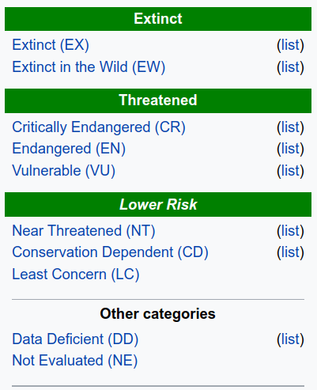
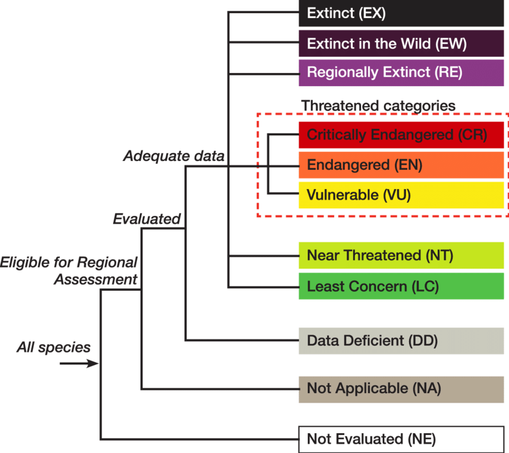

Class 4: Life history and conservation status#
EEB 125#
Tomo Parins-Fukuchi#
Class 4: Life history and conservation status#
Goals for the day#
Writing functions in Python
Today we will apply some of the programming concepts we’ve been studying to create summaries of a few different types of data
Functions#
A block of instructions that perform a specific task
Can combine a set of instructions that we might use a lot and reuse the same code
Saves us from having to rewrite the same code over and over again
Functions#
You have already encountered some functions in Python, e.g.,
max(),open(), etcWe will now learn how to write our own functions that do whatever we want them to do
# we can define a new function by typing 'def', followed by the name of our new function
def greeting():
# we can then specify the tasks we want to perform
phrase = "hi, my name is"
print(phrase)
# we can now run these same instructions anytime we want by _calling_ our function:
greeting()
Functions#
Functions also give us the ability to specify a ‘return’ value
This causes the function to output a value every time it is used
def greeting():
phrase = "hi, my name is"
return phrase
# what will happen if we try to call this function?
greeting()
Functions#
We can assign the return value to a variable
say_something = greeting()
print(say_something)
Functions#
We can also pass values to the function when we call it by specifying parameters between the parentheses
We must specify the parameters we want our function to take when we define it
def greeting(my_name):
phrase = "hi, my name is " + my_name
return phrase
say_something = greeting("slim shady")
print(say_something)
# We can put arbitrarily complex instructions in a function
def greeting(my_name, n_repeats):
phrase = ""
starts = ["hi", "what", "who"]
mult = int(n_repeats/3)+1
starts*=mult
for i in range(n_repeats):
phrase += starts[i].upper() + " my name is "
if i == n_repeats-1:
phrase += "CHICKA CHICKA " + my_name
return phrase
hook = greeting("slim shady",3)
print(hook)
Exception handling#
Sometimes, we might encounter errors in our code that we expect
We can tell the computer how to handle those situations using the keywords
tryandexcept
try:
# some code that might create an error
except:
# what to do if an error occurs
numerator = 100
denominator = 2
try:
quot = numerator / denominator
print(quot)
except:
print("this is not valid")
Today’s data story:#
Are mammals that take longer go grow up at greater risk of extinction?#
How long do individuals take to grow up?#
Individuals from different lineages reach maturity at different ages
Does this variation contribute to differences in extinction risk?

Exploratory Data Analysis#
EDA is about looking at data to see what it seems to say.
A basic problem about any body of data is to make it more easily and effectively handleable by minds.
Anything that makes a simpler description possible makes the description more easily handleable.
Exploratory Data Analysis#
What do the raw data tell us about mammalian ecology?
There are too many values to be interpretable by our minds
How can this data be described or summarized?
In general data can be described or summarized quantitatively or in a picture
Mammal maturation#

Mammal maturation#
We might want to start by exploring our data for general patterns
This might improve our intuition for other questions to ask
Orders might be a good way to investigate patterns in mammals
Read in some of our data#
How long does each species usually take to grow to maturity?
Measured in days
file = open("maturity.csv")
lines = file.readlines()
header = lines[0]
data = lines[1:]
print(header)
Understanding our data#
How long does each species usually take to grow to maturity?
Measured in days
Mammalian maturation times by order#
Let’s see how long species take to mature within each order, on average
We will need to calculate the statistical mean for this
Statistical mean/average#
Sum of all the values in a population divided by the total number of values
e.g., we might measure the height of three people (in cm) as:
203, 194, 191the mean will be:
# let's calculate a function that does this
def mean(pop):
tot = 0
for i in pop:
tot += i
mean = tot / len(pop)
return mean
Organize maturation times according to order#
# initialize dictionary that we will use to stock up lists containing the maturation times within each order
order_mat = {}
for line in data:
line_dat = line.strip().split(",")
order = line_dat[0]
order_mat[order] = []
Stock up our dictionary with maturation times#
print(header)
for line in data:
line_dat = line.strip().split(",")
order = line_dat[0]
mat_time = line_dat[-1]
if mat_time != "NA": # Why do we need this?
mat_time = float(mat_time)
order_mat[order].append(mat_time)
Calculate the mean for each order#
order_means = {}
for order in order_mat:
mattimes = order_mat[order]
num_species = len(mattimes)
if num_species > 0:
ord_mean = mean(mattimes)
order_means[order] = ord_mean
for order in order_means:
print(order,order_means[order])
Simplifying things#
Some of the orders might have very few species
Let’s remove these so we can interpret more easily
order_means = {}
for order in order_mat:
mattimes = order_mat[order]
num_species = len(mattimes)
if num_species > 10:
ord_mean = mean(mattimes)
order_means[order] = ord_mean
for order in order_means:
print(order,order_means[order])
Units#
measuring maturation time in days can be a bit hard to interpret
we might like to convert to years
order_means = {}
for order in order_mat:
mattimes = order_mat[order]
num_species = len(mattimes)
if num_species > 10:
ord_mean = mean(mattimes) / 365.
order_means[order] = ord_mean
for order in order_means:
print(order,order_means[order])
Today’s data story:#
Are mammals that take longer go grow up at greater risk of extinction?#
IUCN Red List#
To assess extinction risk, we will use IUCN status
IUCN is a conservation organization that manages information on threats to wild animals
IUCN Red List#

Read in our IUCN data#
# get our data read in and prepped
iucn=open("iucn_status.csv")
iucn_lines = iucn.readlines()
iucn_header = iucn_lines[0]
iucn_data = iucn_lines[1:]
IUCN Red List#
We will need to combine information from both datasets to ask our question
print(iucn_header)
print(header)
Our approach:#
We will calculate the mean maturation time for all of the mammals within a given risk category
Need to merge the two datasets by linking information for all the species shared between datasets
Setup both datasets#
Map the IUCN threat level to each species using a dictionary
sp_iucn = {}
for line in iucn_data:
line_dat = line.strip().split(",")
species = line_dat[1]
iucn_risk = line_dat[2]
sp_iucn[species] = iucn_risk
Setup both datasets#
Map maturation time to each species using a dictionary
sp_mat = {}
for line in data:
line_dat = line.strip().split(",")
species = line_dat[1]
mat_time = line_dat[2]
if mat_time != "NA":
sp_mat[species] = float(mat_time) / 365 # convert to years
Linking things up#
We will want to calculate the mean maturation time for the species within each risk category
First, how can we find what unique risk categories exist in our dataset?
risk_cat = sp_iucn.values()
unique_risk_cat = set(risk_cat)
print(unique_risk_cat)
Getting setup#
create our container that links maturation times with IUCN risk level
we will want to store the maturation times associated with each level in a list
iucn_mat = {}
for cat in unique_risk_cat:
iucn_mat[cat] = []
Link our two dictionaries to a third#
Both of our dictionaries,
sp_matandsp_iucnhave species names as the keysWe can use the keys of one to look up the values from the other
We then need to add values to our third dictionary,
iucn_mat
Dictionary overload#
sp_mat: keys = species name, values = maturation timesp_iucn: keys = species name, values = iucn risk leveliucn_mat: keys = iucn risk level, values = empty list (to be populated with maturation times)
The approach (in English)#
iterate through
sp_matkeys are species, values are maturation time
look up the IUCN risk level stored in
sp_iucnusing the keys we are iterating overpopulate the lists associated with each key in
iucn_mat
for sp in sp_mat:
mat = sp_mat[sp]
iucn_cat = sp_iucn[sp] ##
iucn_mat[iucn_cat].append(mat)
for sp in sp_mat:
mat = sp_mat[sp]
try:
iucn_cat = sp_iucn[sp] ##
iucn_mat[iucn_cat].append(mat)
except:
continue
Calculate means#
loop through iucn_mat and calculate the mean for each risk level
iucn_means = {}
for cat in iucn_mat:
mat_times = iucn_mat[cat]
if len(mat_times)>0:
cat_mean = mean(mat_times)
iucn_means[cat] = cat_mean
for cat in iucn_means:
print(cat, iucn_means[cat])
What categories should we consider ‘at risk’?#
